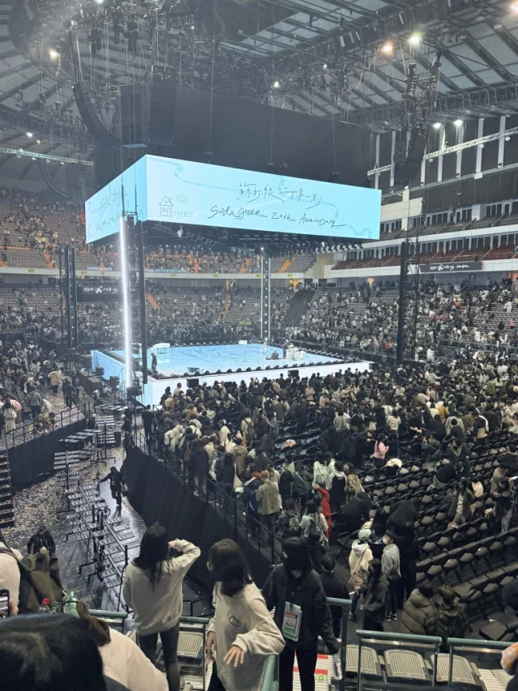
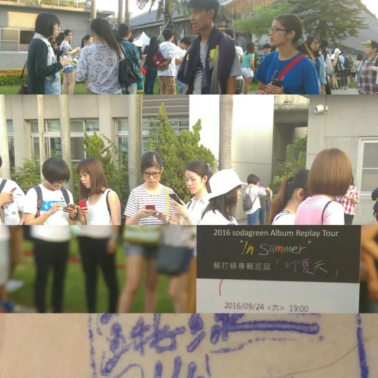
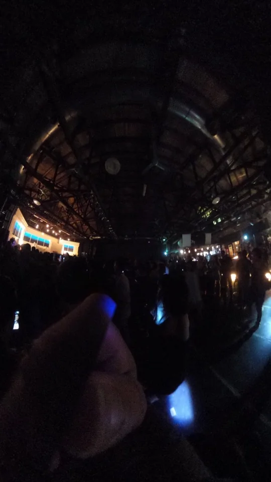
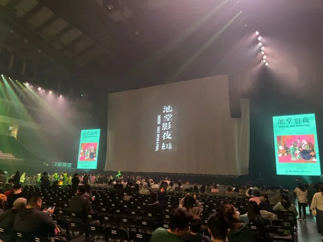
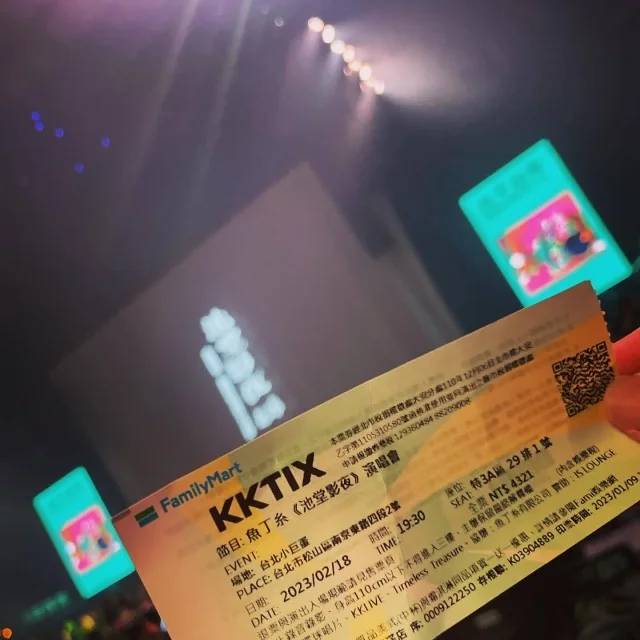

一直以為自己看過 4 場蘇打綠演唱會——結果認真翻遍相簿與臉書貼文想找第 4…

一直以為自己看過 4 場蘇打綠演唱會——結果認真翻遍相簿與臉書貼文想找第 4 場的照片佐證，才終於破案：原來早年那則寫著「小球場・喜歡寂寞」的動態原來是去聽小球（莊鵑瑛）專場時，現場聽到她翻唱蘇打綠的〈喜歡寂寞〉 XD！
因為那首〈喜歡寂寞〉在腦海裡的現場畫面太深刻，多年來記憶居然自動幫蘇打綠多加了一場業績！
不過，光是真正親臨現場的這三場——從 2016 年休團前夕的台中《印夏天 In Summer》、2023 年 2 月 18 日在台北小巨蛋毫無防備下哭著喊回「我們是蘇打綠」的《池堂影夜》，再到 2025 年《二十年一刻》重返小巨蛋的二十歲之約——不知不覺間，卻也實實在在地陪著這六個人走過了將近十年的跌宕與重逢。
【一、2016.09.24 台中《印夏天 In Summer》：在舊酒廠 TADA 方舟聽完整張《你在煩惱什麼》】
時間倒回 2016 年 9 月底。那年夏天，剛在金曲獎抱回大獎卻拋出「即將休團三年」震撼彈的蘇打綠，沒有選擇去萬人體育館開巡迴，反而發起了一場號稱「史上最硬夏天」的《印夏天 In Summer》專輯巡迴——連續 10 個週末、跑遍北中南 10 個中小型場地，把出道以來的 10 張專輯照曲序從頭到尾唱一遍。
2016 年 9 月 24 日（週六） 衝去台中的那一場（現場紀錄一｜現場紀錄二｜現場紀錄三），場地是台中文化創意產業園區（舊台中酒廠）裡的「TADA 方舟藝文展演空間」，單場只能容納 1,000 人。
而且超巧的是，當晚的主題專輯，正好就是收錄了〈喜歡寂寞〉本尊、〈你被寫在我的歌裡〉、〈燕窩〉、〈當我們一起走過〉與〈控制狂〉的《你在煩惱什麼》！站在只有千人的 Live House 空間裡，近距離聽著他們把整張專輯一首不漏地唱完，下半場再聽那些平常根本聽不到的私房翻唱與荒唐笑鬧，那種貼著心臟共振的親密感，真的是大型場館永遠無法取代的奢侈。
📌 2016《印夏天 In Summer》台中 TADA 方舟場（09/23–09/25）的傳奇歌單與彩蛋：
2016 年《印夏天 In Summer》共 10 站 28 場，全數採開創台灣演唱會先河的「實名制電子感應票卡」入場。在 9 月 23 至 25 日的台中 TADA 方舟站（第 8 站：《你在煩惱什麼》專場），上半場（Album Show）依序完整演繹了〈片刻永恆〉、〈幸福額度〉、〈你被寫在我的歌裡〉、〈如果凝結就是愛〉、〈喜歡寂寞〉、〈燕窩〉、〈繭〉、〈當我們一起走過〉、〈浪漫派〉、〈控制狂〉到〈你在煩惱什麼〉；下半場（Dream Song）不僅請來好友左光平合唱〈心裡有鬼〉（9/24 當晚兔姨還因為青峰唱〈繭〉時在後台大笑，被抓上台道歉兼獻唱 XD），更翻唱了蔡依林〈柵欄間隙偷窺你〉、文夏〈黃昏的故鄉〉、江蕙〈憨阿嬤〉與〈你講的話〉、Coldplay〈Yellow〉接〈我最親愛的〉，安可甚至由馨儀主唱、左光平與家凱合音台語對唱神曲〈小姐請妳給我愛〉！最後點歌時段除了「美豔蜘蛛女凱開、小強青峰、蜜蜂小洋」與噴射「蟑螂砲」的爆笑橋段外，9/24 當晚更點唱了〈這樣的一個麻煩〉、〈掉了〉、〈帶我走〉、〈我們走了一光年〉、〈被雨傷透〉與〈下雨的夜晚〉（PTT Sodagreen 板完整歌單紀實）。


【二、2023.02.18 魚丁糸《池堂影夜》台北小巨蛋：毫無防備下，全場哭著喊回「我們是蘇打綠！」的正名首夜】
2016 年在台中聽著「就算只有片刻我也不害怕，是片刻組成永恆哪」的時候，誰也沒想到後來的休團三年，會演變成一場漫長又折磨的版權與商標官司。
那幾年裡，連說出原本的名字都成了禁忌。六個人硬是把「蘇打綠」三個字拆解成「魚丁糸（Oaeen）」，把歌迷喚作「浮萍」，帶著苦中作樂的韌性與正向能量，把台北小巨蛋一樓蛋黃區改造成鋪滿荷花沼澤與森林木棧道的「魚宇宙」。
2023 年 2 月 18 日（週六），是《池堂影夜》季節限定版重返小巨蛋的第一晚。
因為前一天看彩排場的浮萍們全都死守秘密，那天事前完全不知道會發生什麼大事——前一刻大家還在笑青峰唱〈四季狂想〉太用力扭到脖子落枕、在台上叫小威幫他按摩，或是看著平常淡定的女漢子馨儀唱完〈小時候〉組曲突然淚腺失守、哭到說不出話，轉頭又在〈喜歡寂寞〉接〈不甘寂寞〉時率領全場吶喊「我就是個樸實無華的 Bass 手」；
下一刻，當青峰突然拿出那支在防潮箱裡鎖了整整三年的橄欖綠麥克風「小綠」，六個人並肩站在舞台上，毫無預警地齊聲喊出那句所有人被禁錮了兩千多個日子的——
「全宇宙的朋友大家好，我們是蘇打綠！」
當大螢幕久違地亮起「蘇打綠」三個大字、全場跟著〈相信〉與〈當我們一起走過〉放聲大哭大合唱的那一瞬間，雞皮疙瘩與眼淚真的同時炸開！直到隔天（2 月 19 日）情緒還是久久無法平復，連發了兩篇動態把這場「感動正名場」牢牢記下來（2023.02.19 回味紀錄一｜2023.02.19 回味紀錄二）。
📌 為什麼 2023.02.18 那一晚的「我們是蘇打綠！」如此震撼？（環球音樂 2/18 現場紀實）：
2020 年因商標與合約訴訟，六人取首張試聽單曲之名化身分身樂團「魚丁糸」（團員藝名亦拆字為可田、豕豆、八女、金八、香我、日出），並啟動重錄超過 200 首歌的復刻計畫。雖然 2022 年 10 月智慧財產局公告「蘇打綠」商標由蘇打綠有限公司取得，但在 2023 年 2 月 18 日《池堂影夜》返場首夜之前，六人從未在公開舞台上正式喊回團名。前一天（2/17）彩排場青峰一度痛哭失聲，六人特別與在場歌迷勾勾手約定「絕對不能暴雷」；因此 2/18 當晚全場萬名觀眾是在完全沒有心理準備的狀態下，親眼見證封存三年的橄欖綠專屬麥克風「小綠」初登場、親耳聽見六人齊喊「我們是蘇打綠！」——那份毫無防備的驚喜與眼淚，也讓 2/18 成為無數打粉心中最傳奇的「正名之夜」（美麗佳人雙日完整報導）。


【三、2025.02.23 蘇打綠《二十年一刻》台北小巨蛋：隨堂考取票、戒斷手機袋，與「蘇打綠回家了」的漫天四季紙花】
如果說 2023 年 2 月 18 日是奪回名字的眼淚，那麼兩年後的 2025 年 2 月 23 日《二十年一刻》台北小巨蛋，就是真正以「蘇打綠」之名堂堂正正回家的二十歲成年禮。
從拓元搶票那場堪稱鐵粉隨堂考的 5 題地獄測驗，到開演前夕去超商領出實體票券的雀躍（取票紀錄），每一步都充滿儀式感。
走進小巨蛋入座時，座位上放的不是螢光棒，而是蘇打綠送給每個人的「手機袋小禮」——溫柔卻堅定地提醒大家：接下來的三個多小時，請把手機鎖進袋子裡，用自己的眼睛和耳朵活在當下。
當開場第二首〈早點回家〉唱畢，青峰對著滿場喊出：「台北的朋友，蘇打綠回家了！」眼眶真的瞬間又熱了一次（2025.02.23 現場紀錄一｜2025.02.23 現場紀錄二）。
那一夜的四面台像一座會呼吸的四季寶盒，從春的甦醒、夏的狂熱、秋的故事一路流轉到冬的滂沱；不僅遇見「蘇打綠第 7 人」小洋老師站在青峰身後靜靜彈著吉他、首唱台北場限定新歌〈Silent Angel〉，點歌時段還撞見包廂裡的 S.H.E 三人驚喜合體、邊哭邊聽青峰唱著為她們寫的〈十七〉。
散場時，空中灑落印著青峰手寫「春夏秋冬」四字的限定四季紙花，全場歌迷彎著腰在地上尋寶，就像團員們在台上笑說的：「大家好像在忙著拾穗！」
📌 兩個「2 月 23 日」的命運巧合與《二十年一刻》台北場限定記憶：
2025 年 2 月 23 日《二十年一刻》台北小巨蛋第二場，藏著一個讓資深打粉起雞皮疙瘩的時間密碼——當晚冬季篇章壓軸演唱的〈Tomorrow will be fine.〉，首唱於 2020 年 2 月 23 日（五年前的同一天，休團三年的六人在吳青峰《太空備忘記》小巨蛋安可時驚喜合體首唱，隨後卻陷入團名官司冷凍期）。整整五年後的 2025 年 2 月 23 日，六個人在同一座小巨蛋、同一個月份與日期，終於完成了十張專輯復刻拼圖，重新以「蘇打綠」之名唱響這首歌，宛如一場跨越五年的解凍與重生！至於青峰在台上自嘲「40 歲中年樂團體力有限，這可能是最後一次大型巡迴」，不管未來他們會用什麼形式唱下去，這三場蘇打綠（外加小球莊鵑瑛幫唱的那首〈喜歡寂寞〉XD）早已把最滾燙的片刻，寫進腦海中的永恆裡了。
🎧 搭配閱讀・在 Spotify 收聽蘇打綠 sodagreen 歷年復刻與現場精選歌單：
🟢 蘇打綠（sodagreen）／魚丁糸（Oaeen）・跨世代現場記憶索引：
【記憶彩蛋：小球（莊鵑瑛）場翻唱〈喜歡寂寞〉與正向片段】
• 小球（莊鵑瑛）場・喜歡寂寞（讓我誤以為看過第 4 場的記憶源頭 XD） ｜ 正向能量片段（FB Reel）
【第一場：2016.09.24 蘇打綠《印夏天 In Summer》台中 TADA 方舟（《你在煩惱什麼》專場）】
• 2016.09.24 台中 In Summer 現場紀錄（一）
• 2016.09.24 台中 In Summer 現場紀錄（二）
• 2016.09.24 台中 In Summer 現場紀錄（三）
【第二場：2023.02.18 魚丁糸《池堂影夜》台北小巨蛋（感動正名首夜：我們是蘇打綠！）】
• 2023.02.18 池堂影夜感動正名場・隔日（02.19）回味紀錄（一）
• 2023.02.18 池堂影夜感動正名場・隔日（02.19）回味紀錄（二）
【第三場：2025.02.23 蘇打綠《二十年一刻》巡迴演唱會・台北小巨蛋】
• 2025《二十年一刻》取票紀念（IG）
• 2025.02.23 台北小巨蛋《二十年一刻》現場紀錄（一）
• 2025.02.23 台北小巨蛋《二十年一刻》現場紀錄（二）
【延伸聆聽：蘇打綠 Spotify 專頁】
• 蘇打綠 sodagreen — Spotify 官方藝人歌單
從長篇回憶，接著翻當時的短記
booked！要開始來聽魚丁糸了，是演出前留下的期待；近期重點魚丁糸，過年前還是要聽五月天，則把《印夏天》的記憶留在當時的歌單裡。
還想讀其他現場，可以從音樂現場閱讀指南接著翻。
::http://itigre.com::